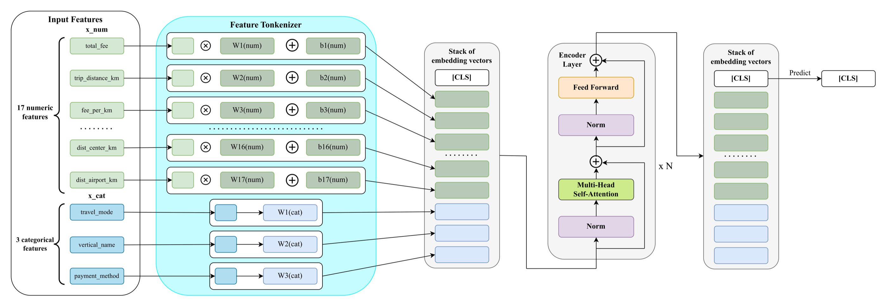
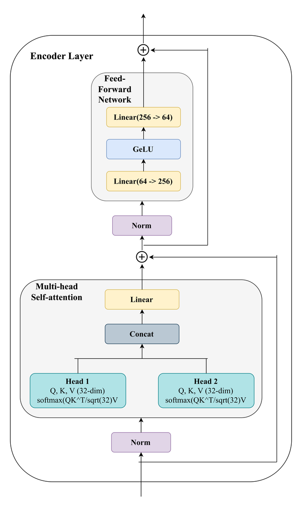

Feature Tokenizer + Transformer Encoder cho bài toán dự đoán khách hủy chuyến sau khi tài xế đã nhận (post-dispatch). Dựa trên FT-Transformer (Gorishniy et al., NeurIPS 2021), điều chỉnh lại vài chi tiết cho phù hợp dữ liệu dự án — xem ghi chú ở mỗi bước.


20 feature/đơn hàng — 17 numeric đi qua phép biến đổi tuyến tính riêng từng feature, 3 categorical đi qua bảng embedding riêng từng feature. Di chuột (hoặc bấm trên di động) vào từng ô để xem thống kê thật.
Biến mỗi feature thành 1 token chiều — numeric và categorical dùng 2 công thức khác nhau, không share tham số giữa các feature.
Paper gốc có thêm 1 bias ở đây — xem lưu ý cuối trang.
1 vector học được, không gắn với feature nào — chỗ "tổng hợp" thông tin toàn chuỗi qua self-attention, output cuối của nó dùng để dự đoán.
N lớp xếp nối tiếp, mỗi lớp trọng số riêng (không share). Dùng Pre-LN (chuẩn hoá TRƯỚC attention/FFN).
Lấy đúng token [CLS] ở vị trí 0 sau lớp encoder cuối cùng — 20 token feature còn lại bị bỏ.
Kiến trúc tìm qua Optuna (tối ưu Cancel PR-AUC trên tập valid, 10 trial × 30 epoch/trial, dùng BCEWithLogitsLoss khi search) — không chọn tay. Focal Loss được thêm sau, riêng cho lần train cuối, sau khi thực nghiệm cho thấy nó cải thiện Cancel PR-AUC so với BCE trên đúng kiến trúc này.
| Tham số | Ký hiệu | Giá trị |
|---|---|---|
| Chiều mỗi token | d | 64 |
| Số head attention | n_heads | 2 |
| Số lớp encoder | N | 2 |
| Chiều ẩn Feed-Forward | d_ffn | 256 |
| Dropout | p | 0,189 |
| Learning rate | η | 1,6 × 10⁻⁴ |
| Weight decay | λ | 1,38 × 10⁻⁴ |
| Batch size | — | 1024 |
| Optimizer | — | AdamW |
| Loss | — | Focal Loss (γ=2) |
Điểm khác biệt duy nhất giữa công thức categorical trong code dự án và paper gốc — đào sâu lại vì đây là chi tiết dễ bị hỏi khi trình bày kiến trúc.
Kiểm chứng bằng thực nghiệm thật — cùng data, cùng hyperparameter (V2 đã tune), cùng Focal Loss, chỉ đổi đúng 1 biến: có/không bias categorical.
| Cấu hình | ROC-AUC | Cancel PR-AUC | Δ Cancel PR-AUC |
|---|---|---|---|
| Không bias categorical (code hiện tại) | 0,7441 | 0,2508 | — |
| + bias categorical (khớp công thức paper) | 0,7377 | 0,2382 | −0,0126 |